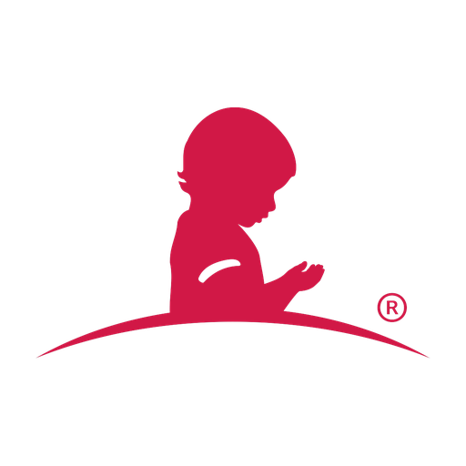

Kristin × Chase × ALSAC.
At ALSAC — the fundraising and awareness engine behind St. Jude — you're modernizing the enterprise site platform, leading the AEM Cloud migration, and shaping the CDP profile strategy that turns supporter data into personalized engagement, all while keeping a C-suite aligned on one roadmap. ProductCentral is the operating layer beneath that work: every supporter signal and stakeholder input synthesized by AI, your Marketing Products portfolio — CDP, email, data activation, lead gen — connected to the systems you already run, and one source of truth so exec, product, and marketing see the same picture in real time. It's the surface mission-driven teams like World Central Kitchen and One Tree Planted use to turn strategy into measurable movement.

